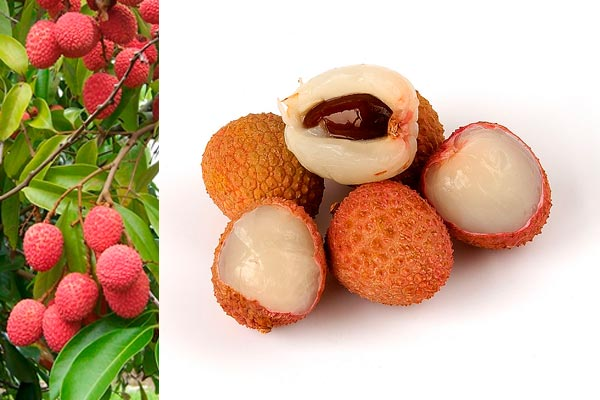
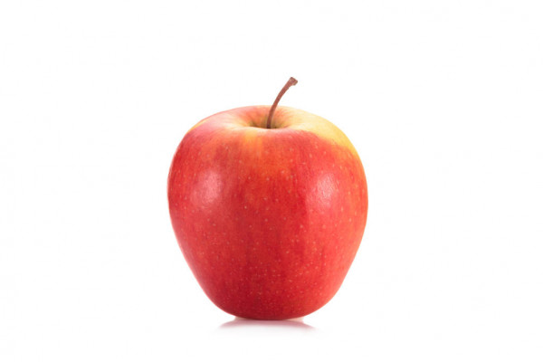

Ameixa
Algo sobre a ameixa

Lichia
Algo sobre a lichia

Maçã
Algo sobre a maçã

Nêspera
Algo sobre a nespera

Romã
Algo sobre a romã

Cão
O cão (nome científico: Canis lupus familiaris), no Brasil também chamado de cachorro, é um mamífero carnívoro da família dos canídeos, subespécie do lobo, e talvez o mais antigo animal domesticado pelo ser humano.
Coelho
Os coelhos são mamíferos[1] lagomorfos da família dos leporídeos, em geral dos gêneros Oryctolagus e Sylvilagus. Caracterizam-se pela cauda curta, as orelhas e patas compridas. Esses pequenos mamíferos encontram-se facilmente em muitas regiões do planeta.